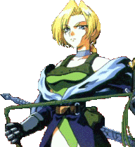
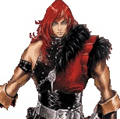
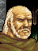
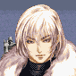

|
History
|
ปี ค.ศ.
|
ชื่อภาค
|
ตัวละครหลัก
|
รายละเอียด
|
|
10xx
|
Castlevania: Lament of Innocence |
Leon Belmont |
- unknow - |
|
1450
|
Castlevania : Legends |
Sonia Belmont |
นักล่าแวมไพร์หญิงคนแรกในตระกูล Belmont |
|
1476
|
Castlevania 3 : Dracula's Curse |
Trevor Belmont |
ลูกชายของ Sonia |
|
1576
|
The Castlevania Adventure |
Christopher Belmont |
???? |
|
1591
|
Castlevania 2: Belmont's Revenge |
Christopher Belmont |
Christopher ไปช่วยเหลือ Solieyu ลูกชายของเขาที่ถูกลักพาตัว |
|
1666
|
Castlevania Resurrection |
Sonia & Victor Belmont |
Sonia และ Victor ถูกพามายังปี 1666 |
|
1691
|
Haunted Castle
Vampire Killer
Castlevania
Castlevania 4, Super
Castlevania Chronicles |
Simon Belmont |
Simon เป็นหลานของ Christopher |
|
1698
|
Castlevania 2: Simon's Quest |
Simon Belmont |
Simon แยกชิ้นส่วน Dracula เพื่อไม่ให้คืนชีพได้ |
|
1748
|
Castlevania: Harmony of Dissonance |
Juste Belmont |
Lydie เพื่อนของ Juste ถูกลักพาตัวไป |
|
1792
|
Dracula X: Rondo of Blood
Castlevania: Dracula X
|
Richter Belmont |
Ricther เป็นหลานของ Solieyu |
|
1797
|
Castlevania: Symphony of the Night |
Alucard |
ผู้มีสายเลือด Dracula อยู่ครึ่งหนึ่ง |
|
1830
|
Castlevania: Circle of the Moon |
Nathan Graves |
ผู้รับสืบทอดแส้ "Vampirekiller" |
|
1844
|
Castlevania: Legacy of Darkness |
Cornell |
Cornell มนุษย์หมาป่า ??? |
|
1852
|
CastleVania 64 |
Reinhart Schneider |
คนของตระกูล Belmont แต่นามสกุล??? |
|
1897
|
- |
Quincey Morris |
- |
|
1917
|
CastleVania: Bloodlines |
John Morris |
John ลูกชายของ Quincey |
|
2035
|
Castlevania: Aria of Sorrow |
Soma Cruz |
Soma ทายาท Dracula ??? |
* Note : ชื่อภาคในวงเล็บคือชื่อภาษา Japan
10xx
Castlevania: Lament of Innocence
จำหน่ายปี 2003 ระบบ ????
Leon Belmont
- unknow -
1450
Castlevania: Legends (Legend of Dracula: Dark Night Prelude)
จำหน่ายปี 1998 ระบบ Gameboy
Sonia Belmont

เรื่องราวอยู่ใน Romania หลังจากที่เธอปราบ Dracula ได้ ผู้คนต่างหวาดกลัวกับพลังของเธอจึงขับไล่เธอออกไป
แต่ในระหว่างที่เธออยู่กับ Alucard เธอก็ได้ให้กำเนิดทารกขึ้นมา นั่นก็คือ
Trevor Belmont
นั่นเท่ากับว่า ตระกูล Belmont มีสายเลือดของ Dracula อยู่ 1 ใน 4
และเป็นเหตุผลว่า ทำไมตระกูล Belmont จึงต้องใช้นามสกุลของแม่
(เพราะฝ่ายพ่อคือ Alucard ไม่มีนามสกุลนั่นเอง)
1476
CastleVania 3: Dracula's Curse (Akumajou Densetsu - Legend of
Demon Castle)
จำหน่ายปี 1990 ระบบ NES
Trevor Belmont
เรื่องราวอยู่ในเมือง Warakiya ซึ่งถูกโจมตีโดย Dracula มีเด็กรอดชีวิตคนหนึ่งคือ
Trevor
แต่ไม่มีใครทราบว่าเขาคือคนของตระกูล Belmont (เนื่องจากผู้คนหวาดกลัวกับพลังของคนในตระกูลนี้)
Trevor ไม่ได้ต่อสู้เพียงลำพัง เขามีผู้ช่วยเหลือคือ Grant DaNasty,
Sypha Belnades และ Alucard
Grant DaNasty
โจรสลัด ที่ถูกสาบโดย Dracula
Sypha Belnades

นักเวทย์ลึกลับ
1576
The Castlevania Adventure (Dracula Densetsu - Legend of Dracula)
จำหน่ายปี 1989 ระบบ Gameboy
Christopher Belmont

100 ปีผ่านไป หลังจากที่ Trever Belmont ได้ปราบ Dracula ลงได้
พลังของ Dracula ก็ได้เข้มแข็งมากขึ้น ทำให้ Dracula ฟื้นคืนชีพขึ้นมาอีกครั้ง
การต่อสู้ระหว่างตระกูล Belmont และ Dracula จึงเริ่มต้นขึ้นอีกครั้ง
คราวนี้เป็นชะตากรรมของ Christopher Belmont ผู้เป็นหลานของ Trevor
1591
Castlevania 2: Belmont's Revenge (Dracula Densetsu 2 - Legend
of Dracula 2)
จำหน่ายปี 1991 ระบบ Gameboy
Dracula ได้ลักพาตัว Solieyu ลูกชายของ Christopher เขาจึงต้องไปช่วย
1666
Castlevania Resurrection
ยกเลิกการวางจำหน่าย ระบบ Sega Dreamcast
Sonia และ Victor ถูกพาตัวมายังปี 1666 ณ London ประเทศอังกฤษ
Sonia จากยุค 1400s และ Victor จากยุค 1800s
1691
Haunted Castle (Akumajou Dracula - Demon Castle Dracula) จำหน่ายปี
1988 ระบบ Arcade
Vampire Killer (Akumajou Dracula - Demon Castle Dracula ) จำหน่ายปี
1986 ระบบ MSX
Castlevania (Akumajou Dracula - Demon Castle Dracula) จำหน่ายปี
1987 ระบบ NES, Commodore 64, Amiga, Arcade (Versus)
Super Castlevania 4 (Akumajou Dracula - Demon Castle Dracula) จำหน่ายปี
1991 ระบบ SNES
Castlevania Chronicles (Castlevania Chronicle: Akumajou Dracula)
จำหน่ายปี 1993/2001 ระบบ Sharp X6000/Playstation
Simon Belmont

เป็นเรื่องราวใน Transylvania (มีมากถึง 5 ภาค)
100 ปีผ่านไป หลังจากที่ Christopher Belmont ได้ปราบ Dracula ลงได้
พลังของ Dracula ก็ได้เข้มแข็งมากขึ้น ทำให้ Dracula ฟื้นคืนชีพขึ้นมาอีกครั้ง
การต่อสู้ระหว่างตระกูล Belmont และ Dracula จึงเริ่มต้นขึ้นอีกครั้ง
คราวนี้เป็นชะตากรรมของ Simon ผู้เป็นหลานหลานของ
Christopher
Dracula ได้ลักพาตัว Linda Entwhistle แฟนสาวของ Simon ไป
1698
CastleVania 2: Simon's Quest (Dracula 2: The Accursed Seal)
จำหน่ายปี 1988 ระบบ NES
Simon ทราบวิธีการหยุดยั้งการฟื้นคืนชีพของ Dracula มีเพียงวิธีเดียวเท่านั้นคือ
ต้องแยกชิ้นส่วนของ Dracula เพื่อไม่ให้ Dracula ทำพิธีฟื้นคืนชีพได้
1748
Castlevania: Harmony of Dissonance (Castlevania: Concerto of
the Midnight Sun)
จำหน่ายปี 2002 ระบบ Gameboy Advance
Juste Belmont

Lydie เพื่อนของ Juste ถูกลักพาตัว Juste และ Maxim จึงต้องออกไปค้นหาในปราสาท
Dracula
แต่ความจริงแล้ว Maxim ถูกบงการโดย Dracula ให้ลักพาตัว Lydie
โดยหลอกล่อให้ Juste ค้นหาชิ้นส่วนของ Dracula ที่เคยถูก Simon แยกไว้
Lydie Erlanger
Maxim Quincen

1788-1792
(Dracula X: The Rondo of Blood)
จำหน่ายปี 1993 ระบบ PC Engine Super CD-ROM (Turbografx-16)
Castlevania: Dracula X (Akumajou Dracula XX)
จำหน่ายปี 1995 ระบบ SNES
Richter Belmont
ในภาค The Rondo of Blood พ่อมดชั่วร้าย Shaft ซึ่งเป็นลูกสมุนของ
Dracula
ได้ลักพาตัว Annet Renard ซึ่งเป็นแฟนสาวของ Richter และ Maria ซึ่งเป็นน้องสาวของ
Annet
รวมทั้งแม่ชี Tera และ Iris ลูกสาวของหมอประจำหมู่บ้านไปด้วย
ส่วนในภาค Dracula X คราวนี้ Dracula ได้ลักพาตัว
Annet และ Maria ไปอีกครั้ง
1797
CastleVania: Symphony of the Night (Akumajou Dracula X: Gekka
no Yasoukyoku - Nocturne in the Moonlight)
จำหน่ายปี 1997 ระบบ Playstation
(Akumajou Dracula X: Gekka no Yasoukyoku - Nocturne in the Moonlight)
จำหน่ายปี 1998 ระบบ Saturn
Alucard
เป็นลูกของ Dracula กับหญิงสาวซึ่งเป็นมนุษย์ Ilona Elisabeth Szilagy
(Lisa)
Alucard ได้มีความสัมพันธ์กับ Sonia Belmont และได้ให้กำเนิด Trevor
ขึ้นมา
Alucard ได้ช่วยเหลือ Trevor Belmont ต่อสู้กับ Dracula ใน ปี ค.ศ.1476
(Catlevania 3)
ซึ่งในตอนนั้น Alucard ได้ใช้ชื่อ Adrian Fahrenheit Tepes
หลังจากที่ปราบพ่อของเขาได้ Alucard ได้จำศีลตัวเองลง
จนกระทั่งปี 1797 Alucard ได้ตื่นขึ้นมาอีกครั้ง เพื่อค้นหาว่า ทำไม
Richter ถึงหายตัวไป
Maria
* Note : ภาค Saturn สามารถนำ Maria มาเล่นได้
1830
Castlevania: Circle of the Moon (Akumajo Dracula: Circle of the
Moon)
จำหน่ายปี 2001 ระบบ Gameboy Advance
Nathan Graves

Camilla ได้ปลุก Dracula ให้ฟื้นขึ้นมา Morris Baldwin, Hugh Baldwin
และ Nathan จึงเข้าไปหยุดยั้ง
Morris Baldwin

Hugh Baldwin

1844
CastleVania: Legacy of Darkness (Akumajou Dracula Mokushiroku
Gaiden: The Legend of Cornell)
จำหน่ายปี 1999 ระบบ Nintendo 64
Cornell
Dracula ฟื้นคืนชีพขึ้นมาอีกครั้ง แต่มีพลังไม่สมบูรณ์ จึงบูชายันหญิงสาว
และลักพาตัวเด็กเพื่อค้นหาร่างที่มีวิญญาณที่เหมาะสม เพื่อสิงสถิตย์
Cornell ที่เป็นมนุษย์หมาป่าออกไปช่วยเหลือน้องสาวของเขาที่ถูกลักพาตัวไป
Ada น้องสาวของ Cornell (แต่ไม่ใช่น้องสาวตามสายเลือด)
ในระหว่างทาง Cornell ได้ช่วยเหลือเด็กคนหนึ่งไว้ได้
นั่นก็คือ Henry Oldrey
Henry Oldrey
8 ปีต่อมา (1852) Henry ต้องออกไปช่วยเหลือเด็ก 6 คน ที่ปราสาท Dracula
ซึ่งจะมีอายุครบ 8 ปีพร้อมกัน โดยหนึ่งในนั้นอาจถูก Dracula สิงสู่ได้
และ Henry มีเวลาเพียง 7 วันเท่านั้น ที่จะหยุดยั้ง
แต่ว่า Henry หารู้ไม่ว่า Cornell และ Ada ที่ย้ายไปอาศัยอยู่ในป่า
ได้ให้กำเนิดเด็กทารกขึ้นมา
ซึ่งทารกคนนั้นเป็นเด็กที่ถูกเลือกไว้แล้ว ให้เป็นร่างของ Dracula
1852
Castlevania (Akumajo Dracula Mokushiroku - Apocalypse)
จำหน่ายปี 1999 ระบบ Nintendo 64
Reinhart Schneider
Reinhart Schneider (อายุ 25 ปี) เป็นคนในตระกูล Belmont เช่นกัน (Schneider
Belmont)
แต่เขาได้ใช้นามสกุลนี้มาจากพ่อ คือ Michael Gelhart ออกปราบ Dracula
พร้อมกับ
Carrie Fernandez
Carrie Fernandez เด็กหญิงวัย 12 ขวบ เธอเป็นทายาทของ Sypha Beln
เมื่อเวลาผ่านไปครบ 8 ปี
Malus ลูกของ Cornell และ Ada ก็อายุครบ 8 ปี
เขาเป็นเด็กคนที่ 7 เด็กที่ถูกเลือกตั้งแต่กำเนิด และ Death ก็ได้นำตัวเขาไปไว้ในปราสาท
Dracula
และเมื่อ Reinhardt และ Carrie ไปเจอ ก็พบว่า เขาได้กลายเป็น Dracual
ไปแล้ว
1897
Dracula ได้ฟื้นคืนชีพขึ้นมาอีกครั้ง แต่ถูก Quincey Morris และ Jonathan
Harker ปราบลงได้
แต่ Quincey ก็พลาดท่าเสียชีวิต ทิ้งไว้แต่ลูกชาย John (Quincey เป็นทายาทของตระกูล
Belmont เช่นกัน)
1917
Castlevania: Bloodlines (Vampire Killer)
จำหน่ายปี 1994 ระบบ Genesis
John
Morris
ได้เกิดอุบัติเหตุขึ้น ทำให้ Elizabeth Bartley ผู้เป็นหลานสาวของ
Dracula ฟื้นคืนชีพขึ้นมา
เธอพยายามปลุก Dracula ให้ฟื้นคืนชีพขึ้นมาด้วย John Morris และ Eric
Lecarde จึงต้องไปหยุดยั้ง
Eric
Lecarde
2035
Castlevania: Aria of Sorrow (Castlevania: Minuet of Dawn)
จำหน่ายปี 2003 ระบบ Gameboy Advance
Soma Cruz

Soma ไปดูสุริยคราส แต่กลับหลุดเข้าไปในปราสาท Dracula และทำให้เขาทราบว่า
เขาคือทายาทของ Dracula
Julius Belmont

ผู้ที่เคยปราบ Dracula ไปก่อนหน้านี้ กลับมาอีกครั้งปราบ Dracula
|